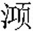

飞机负了掷下炸弹的使命，像学校的上课似的，每日上午在北京城上飞行。[79]每听得机件搏击空气的声音，我常觉到一种轻微的紧张，宛然目睹了“死”的袭来，但同时也深切地感着“生”的存在。
隐约听到一二爆发声以后，飞机嗡嗡地叫着，冉冉地飞去了。也许有人死伤了罢，然而天下却似乎更显得太平。窗外的白杨的嫩叶，在日光下发乌金光；榆叶梅也比昨日开得更烂漫。收拾了散乱满床的日报，拂去昨夜聚在书桌上的苍白的微尘，我的四方的小书斋，今日也依然是所谓“窗明几净”。
因为或一种原因，我开手编校那历来积压在我这里的青年作者的文稿了；我要全都给一个清理。我照作品的年月看下去，这些不肯涂脂抹粉的青年们的魂灵便依次屹立在我眼前。他们是绰约的，是纯真的，——阿，然而他们苦恼了，呻吟了，愤怒，而且终于粗暴了，我的可爱的青年们！
魂灵被风沙打击得粗暴，因为这是人的魂灵，我爱这样的魂灵；我愿意在无形无色的鲜血淋漓的粗暴上接吻。漂渺的名园中，奇花盛开着，红颜的静女正在超然无事地逍遥，鹤唳一声，白云郁然而起……。这自然使人神往的罢，然而我总记得我活在人间。
我忽然记起一件事：两三年前，我在北京大学的教员预备室里，看见进来了一个并不熟识的青年[80]，默默地给我一包书，便出去了，打开看时，是一本《浅草》[81]。就在这默默中，使我懂得了许多话。阿，这赠品是多么丰饶呵！可惜那《浅草》不再出版了，似乎只成了《沉钟》[82]的前身。那《沉钟》就在这风沙

洞中，深深地在人海的底里寂寞地鸣动。野蓟经了几乎致命的摧折，还要开一朵小花，我记得托尔斯泰[83]曾受了很大的感动，因此写出一篇小说来。但是，草木在旱干的沙漠中间，拚命伸长他的根，吸取深地中的水泉，来造成碧绿的林莽，自然是为了自己的“生”的，然而使疲劳枯渴的旅人，一见就怡然觉得遇到了暂时息肩之所，这是如何的可以感激，而且可以悲哀的事！？
《沉钟》的《无题》[84]——代启事——说：“有人说：我们的社会是一片沙漠。——如果当真是一片沙漠，这虽然荒漠一点也还静肃；虽然寂寞一点也还会使你感觉苍茫。何至于像这样的混沌，这样的阴沉，而且这样的离奇变幻！”
是的，青年的魂灵屹立在我眼前，他们已经粗暴了，或者将要粗暴了，然而我爱这些流血和隐痛的魂灵，因为他使我觉得是在人间，是在人间活着。
在编校中夕阳居然西下，灯火给我接续的光。各样的青春在眼前一一驰去了，身外但有昏黄环绕。我疲劳着，捏着纸烟，在无名的思想中静静地合了眼睛，看见很长的梦。忽而惊觉，身外也还是环绕着昏黄；烟篆[85]在不动的空气中上升，如几片小小夏云，徐徐幻出难以指名的形象。
一九二六年四月十日。
[1] 本篇最初发表于1927年7月2日北京《语丝》周刊第一三八期，在本书最初几次印刷时都曾印入；1931年5月上海北新书局印第七版时被国民党书报检查机关抽去，1941年上海鲁迅全集出版社出版《鲁迅三十年集》时才重新收入。
本篇作于广州，当时正值国民党在上海发动“四一二”“清党”反共政变和广州发生“四一五”大屠杀后不久，它反映了作者在险恶环境下的悲愤心情。
本书所收的二十三篇散文诗，都作于北洋军阀统治下的北京。作者在1932年回忆说：“后来《新青年》的团体散掉了，有的高升，有的退隐，有的前进，我又经验了一回同一战阵中的伙伴还是会这么变化，并且落得一个‘作家’的头衔，依然在沙漠中走来走去，不过已经逃不出在散漫的刊物上做文字，叫作随便谈谈。有了小感触，就写些短文，夸大点说，就是散文诗，以后印成一本，谓之《野草》。”（《南腔北调集·〈自选集〉自序》）又在1934年10月9日致萧军信中说：“我的那一本《野草》，技术并不算坏，但心情太颓唐了，因为那是我碰了许多钉子之后写出来的。”其中某些篇的文字较隐晦，据作者后来解释：“因为那时难于直说，所以有时措辞就很含糊了。”（《二心集·〈野草〉英文译本序》）
[2] 1927年9月23日，作者在广州作的《怎么写》（后收入《三闲集》）一文中，曾描绘过他的这种心情：“我靠了石栏远眺，听得自己的心音，四远还仿佛有无量悲哀，苦恼，零落，死灭，都杂入这寂静中，使它变成药酒，加色，加味，加香。这时，我曾经想要写，但是不能写，无从写。这也就是我所谓‘当我沉默着的时候，我觉得充实，我将开口，同时感到空虚’。”
[3] 大欢喜 佛家语，指达到目的而感到极度满足的一种境界。
[4] 陈死人 指死去很久的人。见《古诗十九首·驱车上东门》：“驱车上东门，遥望郭北墓。……下有陈死人，杳杳即长暮。……”
[5] 地面 比喻黑暗的旧社会。作者曾说，《野草》中的作品“大半是废弛的地狱边沿的惨白色小花”。（《〈野草〉英文译本序》）
[6] 白云楼 在广州东堤白云路。据鲁迅日记，1927年3月29日，作者由中山大学“移居白云路白云楼二十六号二楼”。
[7] 本篇最初发表于1924年12月1日《语丝》周刊第三期。
[8] 猩红色的栀子 栀子，一种常绿灌木，夏日开花，一般为白色或淡黄色；红栀子花是罕见的品种。据《广群芳谱》卷三十八引《万花谷》载：“蜀孟昶十月宴芳林园，赏红栀子花；其花六出而红，清香如梅。”
[9] 本篇最初发表于1924年12月8日《语丝》周刊第四期。
1925年3月18日作者在给许广平的信中曾说：“我的作品，太黑暗了，因为我常觉得惟‘黑暗与虚无’乃是‘实有’，却偏要向这些作绝望的抗战，所以很多着偏激的声音。其实这或者是年龄和经历的关系，也许未必一定的确的，因为我终于不能证实：惟黑暗与虚无乃是实有。”（《两地书·四》）可参看。
[10] 本篇最初发表于1924年12月8日《语丝》周刊第四期。
[11] 本篇最初发表于1924年12月8日《语丝》周刊第四期。
作者在《〈野草〉英文译本序》中说：“因为讽刺当时盛行的失恋诗，作《我的失恋》”。在《三闲集·我和〈语丝〉的始终》一文中谈到本篇时说：“不过是三段打油诗，题作《我的失恋》，是看见当时‘阿呀阿唷，我要死了’之类的失恋诗盛行，故意做一首用‘由她去罢’收场的东西，开开玩笑的。这诗后来又添了一段，登在《语丝》上”。
[12] 拟古的新打油诗 拟古，这里是模拟东汉文学家、天文学家张衡的《四愁诗》的格式。《四愁诗》共四首，每首都以“我所思兮在××”开始，而以“何为怀忧心××”作结，故称“四愁”。最早见于南朝梁昭明太子萧统所编的《文选》第二十九卷。打油诗，传说唐代人张打油所作的诗常用俚语，且故作诙谐，有时暗含嘲讽，被称为打油诗。
[13] 冰糖壶卢 用山楂等果品蘸以糖汁制成的一种食品。据清末富察敦崇编著的《燕京岁时记》载：“冰糖壶卢，乃用竹签贯以葡萄、山药豆、海棠果、山里红等物，蘸以冰糖，甜脆而凉。”
[14] 赤练蛇 一作赤链蛇，生活于山林或草泽地区。头黑色，鳞片边缘暗红色；体背黑褐色，有红色窄横纹。无毒。
[15] 本篇最初发表于1924年12月29日《语丝》周刊第七期。
作者在《〈野草〉英文译本序》中说：“因为憎恶社会上旁观者之多，作《复仇》第一篇”。又在1934年5月16日致郑振铎信中说：“不动笔诚然最好。我在《野草》中，曾记一男一女，持刀对立旷野中，无聊人竞随而往，以为必有事件，慰其无聊，而二人从此毫无动作，以致无聊人仍然无聊，至于老死，题曰《复仇》，亦是此意。但此亦不过愤激之谈，该二人或相爱，或相杀，还是照所欲而行的为是。”
[18] 本篇最初发表于1924年12月29日《语丝》周刊第七期。
文中关于耶稣被钉十字架的事，是根据《新约全书》中的记载。
[19] 以色列的王 即犹太人的王。据《新约全书·马可福音》第十五章载：“他们带耶稣到了各各他地方（各各他翻出来，就是髑髅地），……于是将他钉在十字架上，……在上面有他的罪状，写的是犹太人的王。”
[20] 关于耶稣被钉十字架的情况，据《马可福音》第十五章载：“将耶稣鞭打了，交给人钉十字架。……他们给他穿上紫袍，又用荆棘编作冠冕给他戴上，就庆贺他说，恭喜犹太人的王阿。又拿一根苇子，打他的头，吐唾沫在他脸上，屈膝拜他。戏弄完了，就给他脱了紫袍，仍穿上他自己的衣服，带他出去，要钉十字架。”
[21] 没药（myrrh） 药名，一作末药，梵语音译。由没药树树皮中渗出的脂液凝结而成。有镇静、麻醉等作用。《马可福音》第十五章有兵丁拿没药调和的酒给耶稣，耶稣不受的记载。
[22] 据《马可福音》第十五章载：“他们又把两个强盗，和他同钉十字架，一个在右边，一个在左边。从那里经过的人辱骂他，摇着头说，咳，你这拆毁圣殿，三日又建造起来的，可以救自己从十字架上下来罢。祭司长和文士也是这样戏弄他，彼此说，他救了别人，不能救自己。以色列的王基督，现在可以从十字架上下来，叫我们看见，就信了。那和他同钉的人也是讥诮他。”祭司长，古犹太教管祭祀的人；文士，宣讲古犹太法律，兼记录和保管官方文件的人。他们同属上层统治阶级。
[23] 关于耶稣临死前的情况，据《马可福音》第十五章载：“从午正到申初遍地都黑暗了。申初的时候，耶稣大声喊着说：‘以罗伊，以罗伊，拉马撒巴各大尼？！’翻出来，就是：我的上帝，我的上帝，为什么离弃我？！……气就断了。”
[24] 本篇最初发表于1925年1月19日《语丝》周刊第十期。
作者在《〈野草〉英文译本序》中说：“因为惊异于青年之消沉，作《希望》。”
[25] 作者在《南腔北调集·〈自选集〉自序》中说：“见过辛亥革命，见过二次革命，见过袁世凯称帝，张勋复辟，看来看去，就看得怀疑起来，于是失望，颓唐得很了。……不过我却又怀疑于自己的失望，因为我所见过的人们，事件，是有限得很的，这想头，就给了我提笔的力量。‘绝望之为虚妄，正与希望相同。’”
[26] 杜鹃 鸟名，亦名子规、杜宇，初夏时常昼夜啼叫。唐代陈藏器撰的《本草拾遗》说：“杜鹃鸟，小似鹞，鸣呼不已，出血声始止。”
[27] Petfi Sándor 裴多菲·山陀尔（1823—1849），匈牙利诗人、革命家。曾参加1848年反抗奥地利统治的民族革命战争，1849年在与协助奥国的沙俄军队作战中牺牲。一说他在瑟什堡战役中随一批匈牙利士兵被俘，押至西伯利亚，约于1856年病卒。主要作品有《勇敢的约翰》、《民族之歌》等。这里引的《希望》一诗，作于1845年。
[28] 可萨克 通译哥萨克，原为突厥语，意思是“自由的人”或“勇敢的人”。他们原是俄罗斯的一部分农奴和城市贫民，十五世纪后半叶和十六世纪前半叶，因不堪封建压迫，从俄国中部逃出，定居在俄国南部的库班河和顿河一带，自称为“哥萨克人”。他们善骑战，沙皇时代多入伍当兵。1849年沙皇俄国援助奥地利反动派，入侵匈牙利镇压革命，俄军中即有哥萨克部队。
[29] 绝望之为虚妄，正与希望相同 这句话出自裴多菲1847年7月17日致友人凯雷尼·弗里杰什的信：“……这个月的十三号，我从拜雷格萨斯起程，乘着那样恶劣的驽马，那是我整个旅程中从未碰见过的。当我一看到那些倒霉的驽马，我吃惊得头发都竖了起来……我内心充满了绝望，坐上了大车，……但是，我的朋友，绝望是那样地骗人，正如同希望一样。这些瘦弱的马驹用这样快的速度带我飞驰到萨特马尔来，甚至连那些靠燕麦和干草饲养的贵族老爷派头的马也要为之赞赏。我对你们说过，不要只凭外表作判断，要是那样，你就不会获得真理。”
[30] 本篇最初发表于1925年1月26日《语丝》周刊第十一期。
[32] 宝珠山茶 据《广群芳谱》卷四十一载：“宝珠山茶，千叶含苞，历几月而放，殷红若丹，最可爱。”
[33] 磬口的蜡梅花 据清代陈淏子撰《花镜》卷三载：“圆瓣深黄，形似白梅，虽盛开如半含者，名磬口，最为世珍。”
[34] 本篇最初发表于1925年2月2日《语丝》周刊第十二期。
[36] 本篇最初发表于1925年2月9日《语丝》周刊第十三期。
[37] 《初学记》 类书名，唐代徐坚等辑，共三十卷。取材于群经、诸子、历代诗赋及唐初诸家作品。
[38] 山阴道 指绍兴县城西南一带风景优美的地方。《世说新语·言语》说：“王子敬云：从山阴道上行，山川自相映发，使人应接不暇。”
[39] 伽蓝 梵语“僧伽蓝摩”（Saghārāma）的略称，意思是僧众所住的园林，后泛指寺庙。
[40] 一丈红 即蜀葵，茎高六七尺，六月开花，形大，有红、紫、白、黄等颜色。
[41] 文末所注写作日期迟于发表日期，有误；鲁迅1925年1月28日日记载“作《野草》一篇”，当指本文。
[42] 本篇最初发表于1925年3月9日《语丝》周刊第十七期。
[44] 坟 作者在《写在〈坟〉后面》中说：“我只很确切地知道一个终点，就是：坟。然而这是大家都知道的，无须谁指引。问题是在从此到那的道路。那当然不只一条，我可正不知那一条好，虽然至今有时也还在寻求。”
[45] 作者在写本篇后不久给许广平的信中说：“同我有关的活着，我倒不放心，死了，我就安心，这意思也在《过客》中说过”。（《两地书·二四》）
[46] 本篇最初发表于1925年5月4日《语丝》周刊第二十五期。
[47] 火宅 佛家语，《法华经·譬喻品》中说：“三界（按这里指欲界、色界、无色界，泛指世界）无安，犹如火宅，众苦充满，甚可怖畏，常有生老病死忧患，如是等火，炽然不息。”
[48] 铁线蛇 又名盲蛇，无毒，状如蚯蚓，是我国最小的一种蛇。分布于浙江、福建等地。
[50] 本篇最初发表于1925年5月4日《语丝》周刊第二十五期。
[52] 本篇最初发表于1925年6月22日《语丝》周刊第三十二期。
作者在《〈野草〉英文译本序》中说：“但这地狱也必须失掉。这是由几个有雄辩和辣手，而那时还未得志的英雄们的脸色和语气所告诉我的。我于是作《失掉的好地狱》。”写作本篇一个多月前，作者在《杂语》（《集外集》）中概括辛亥革命后军阀混战给民众带来的深重灾难时曾说：“称为神的和称为魔的战斗了，并非争夺天国，而在要得地狱的统治权。所以无论谁胜，地狱至今也还是照样的地狱。”
[53] 醉心的大乐 使人沉醉的音乐。这里的“大”和下文的“大威权”、“大火聚”等词语中的“大”，都是模仿古代汉译佛经的语气。
[54] 三界 这里指天国、人间、地狱。源自原始宗教萨满教的基本概念。
[55] 剑树 佛教所说的地狱酷刑。《太平广记》卷三八二引《冥报拾遗》：“至第三重门，入见镬汤及刀山剑树。”
[56] 曼陀罗花 曼陀罗，亦称“风茄儿”，茄科，一年生有毒草本。佛经说，曼陀罗花白色而有妙香，花大，见之者能适意，故也译作适意花。
[57] 牛首阿旁 佛教传说中地狱里牛头人身的鬼卒。东晋昙无兰译《五苦章句经》中说：“狱卒名阿傍，牛头人手，两脚牛蹄，力壮排山，持钢铁叉。”
[58] 本篇最初发表于1925年6月22日《语丝》周刊第三十二期。
[61] 本篇最初发表于1925年7月13日《语丝》周刊第三十五期。
[62] 瓦松 又名“向天草”或“昨叶荷草”。丛生在瓦缝中，叶针状，初生时密集短茎上，远望如松树，故名。
[63] 本篇最初发表于1925年7月13日《语丝》周刊第三十五期。
[64] Hehe！ he，hehehehe！ 象声词，即嘿嘿！嘿，嘿嘿嘿嘿！
[65] 本篇最初发表于1925年7月20日《语丝》周刊第三十六期。
[67] 明板《公羊传》 即《春秋公羊传》（又作《公羊春秋》）的明代刻本。《公羊传》是一部阐释《春秋》的书，相传为周末齐国人公羊高所作。
[68] 嘉靖黑口本 我国线装书籍，书页中间折叠的直缝叫做“口”。“口”有“黑口”“白口”的分别：折缝上下端有黑线的叫做“黑口”，没有黑线的叫做“白口”。嘉靖（1522—1566），明世宗的年号。
[69] 本篇最初发表于1925年12月21日《语丝》周刊第五十八期。
作者在《〈野草〉英文译本序》里说：“《这样的战士》，是有感于文人学士们帮助军阀而作。”
[70] 毛瑟枪 指德国机械师毛瑟（Mauser）弟兄在十九世纪七十年代设计制造的一种单发步枪，是当时比较先进的武器。绿营兵，一作绿旗兵。清朝兵制：除正黄、正白、正红、正蓝、镶黄、镶白、镶红、镶蓝等“八旗兵”（以满族人为主）外，又另募汉人编成军队，旗帜采用绿色，叫做绿旗兵。清代中叶以后，绿营兵渐趋衰败，终被裁废。盒子炮，即驳壳枪，连发手枪的一种，枪体大，外有特制的木盒，故名。
[71] 护心镜 古代战衣胸前部位镶嵌的金属圆片，用以保护胸膛。
[72] 本篇最初发表于1926年1月4日《语丝》周刊第六十期。
[73] 头钱 旧时提供赌博场所的人向参与赌博者抽取一定数额的钱，叫做头钱，也称“抽头”。侍候赌博的人，有时也可从中分得若干。
[74] 本篇最初发表于1926年1月4日《语丝》周刊第六十期。
作者在《〈野草〉英文译本序》中说：“《腊叶》，是为爱我者的想要保存我而作的。”又，许广平在《因校对〈三十年集〉而引起的话旧》中说，“在《野草》中的那篇《腊叶》，那假设被摘下来夹在《雁门集》里的斑驳的枫叶，就是自况的”。
[75] 《雁门集》 诗词集，元代萨都剌（1272—1340）著。萨氏为回族人，世居山西雁门，故以名书。
[76] 本篇最初发表于1926年4月19日《语丝》周刊第七十五期。
作者在《〈野草〉英文译本序》中说：“段祺瑞政府枪击徒手民众后，作《淡淡的血痕中》”。
[77] “天之僇民” 语出《庄子·大宗师》。僇，原作戮。僇民，受刑戮的人。原语是孔子的自称，意为受人间世俗束缚的人。
[78] 本篇最初发表于1926年4月19日《语丝》周刊第七十五期。
作者在《〈野草〉英文译本序》中说：“奉天派和直隶派军阀战争的时候，作《一觉》”。
[79] 1926年4月，冯玉祥的国民军和奉系军阀张作霖、李景林所部作战期间，国民军驻守北京，奉军飞机曾多次飞临轰炸。
[80] 当指冯至（1905—1993），河北涿县人，诗人。时为北京大学国文系学生。鲁迅1925年4月3日日记载：“午后往北大讲。浅草社员赠《浅草》一卷之四期一本。”
[81] 《浅草》 文艺季刊，浅草社编。1923年3月创刊，在上海印刷出版。共出四期，1925年2月停刊。主要作者有林如稷、冯至、陈炜谟、陈翔鹤等。
[82] 《沉钟》 文艺刊物，沉钟社编。1925年10月10日在北京创刊。初为周刊，出十期。1926年8月改为半月刊，次年1月出至第十二期休刊；1932年10月复刊，1934年2月出至第三十四期停刊。主要作者除浅草社同人外尚有杨晦等。
[83] 托尔斯泰（Л．Н．Толстой，1828—1910） 俄国作家。著有长篇小说《战争与和平》、《安娜·卡列尼娜》、《复活》等。这里说的“一篇小说”，指中篇小说《哈泽·穆拉特》。野蓟，即牛蒡花，菊科，草本植物。在《哈泽·穆拉特》序曲开始处，作者描写有着顽强生命力的牛蒡花，以象征小说主人公哈泽·穆拉特。
[84] 《无题》 载于《沉钟》周刊第十期（1925年12月）。
[85] 烟篆 燃着的纸烟的烟缕，弯曲上升，好似笔划圆曲的篆字（我国古代的一种字体）。
注 释
[78] 本篇最初发表于1926年4月19日《语丝》周刊第七十五期。
作者在《〈野草〉英文译本序》中说：“奉天派和直隶派军阀战争的时候，作《一觉》”。
[79] 1926年4月，冯玉祥的国民军和奉系军阀张作霖、李景林所部作战期间，国民军驻守北京，奉军飞机曾多次飞临轰炸。
[80] 当指冯至（1905—1993），河北涿县人，诗人。时为北京大学国文系学生。鲁迅1925年4月3日日记载：“午后往北大讲。浅草社员赠《浅草》一卷之四期一本。”
[81] 《浅草》 文艺季刊，浅草社编。1923年3月创刊，在上海印刷出版。共出四期，1925年2月停刊。主要作者有林如稷、冯至、陈炜谟、陈翔鹤等。
[82] 《沉钟》 文艺刊物，沉钟社编。1925年10月10日在北京创刊。初为周刊，出十期。1926年8月改为半月刊，次年1月出至第十二期休刊；1932年10月复刊，1934年2月出至第三十四期停刊。主要作者除浅草社同人外尚有杨晦等。
[83] 托尔斯泰（Л．Н．Толстой，1828—1910） 俄国作家。著有长篇小说《战争与和平》、《安娜·卡列尼娜》、《复活》等。这里说的“一篇小说”，指中篇小说《哈泽·穆拉特》。野蓟，即牛蒡花，菊科，草本植物。在《哈泽·穆拉特》序曲开始处，作者描写有着顽强生命力的牛蒡花，以象征小说主人公哈泽·穆拉特。
[84] 《无题》 载于《沉钟》周刊第十期（1925年12月）。
[85] 烟篆 燃着的纸烟的烟缕，弯曲上升，好似笔划圆曲的篆字（我国古代的一种字体）。